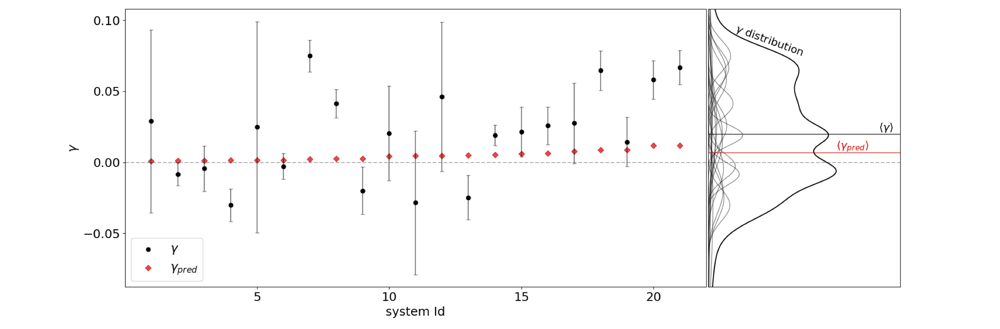
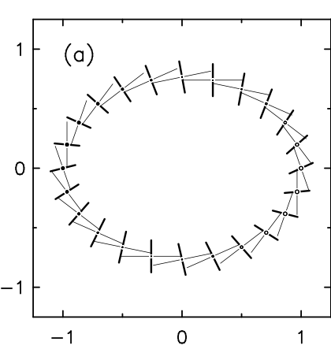
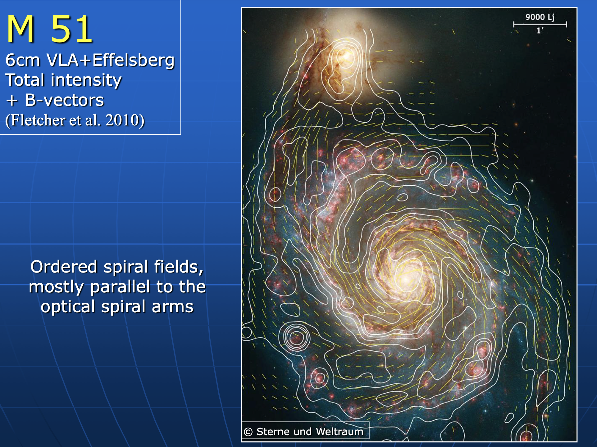
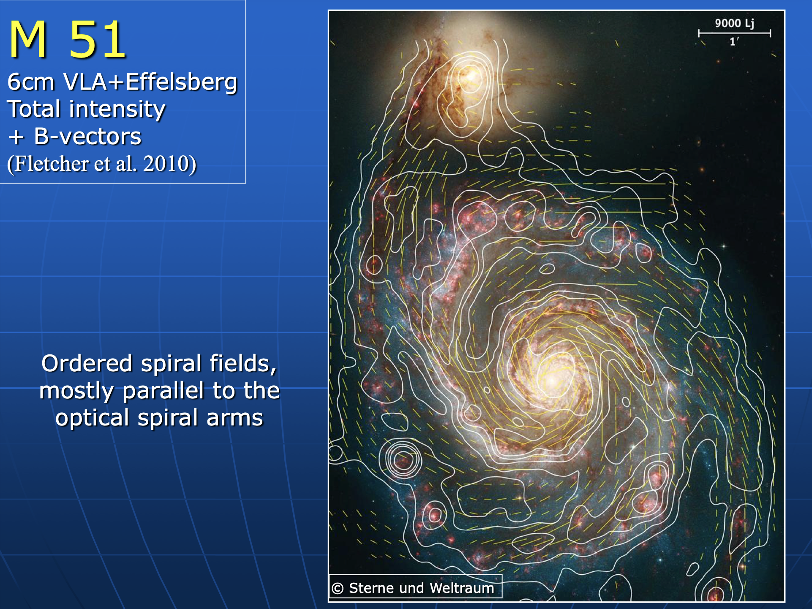
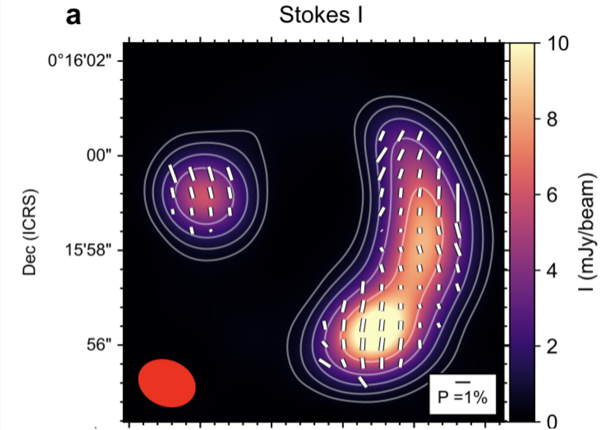
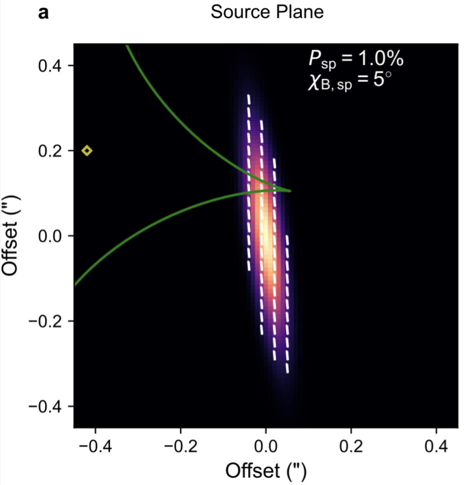

Shear with Radio Galaxy
Polarization & Kinematics
November 8, 2024
Intuitive Picture


First KL Measurement (Gurri et al. 2020)
18 hand-picked galaxy-galaxy systems: \(\ev{\gamma} = 0.0201 \pm 0.0079\)
- primarily sensitive to \(\gamma_\times\); \(\gamma_+\) degenerate with inclination and scale radius
kinematic shape noise dominates uncertainty:
\(\sigma_k \sim 0.03\) vs. \(\sigma_p \sim 0.2\), so need \(\sim\) 50 times fewer galaxies*


Lower kinematic shape noise when gas & stellar velocity fields match
Point to SKA as enabler of KL at scale!
KL Symmetries (Hopp & Witmann 2024)


Intuition
Star-forming galaxies dominate observed sources
- synchrotron emission driven by large-scale galactic magnetic fields
\(\implies\) polarization position angle
- synchrotron emission driven by large-scale galactic magnetic fields
Nearby spiral polarization fractions: 1-10% (Stil et al. 2008)
polarization angle not affected by lensing
- but Faraday effect, and cosmic birefringence..
 
Stil et al. (2008)
Polarization: Some Examples
Slides from a presentation by David Mulcahy

 

Polarized thermal emission from dust in a galaxy at redshift 2.6
(Geach et al. 2023)


A Bit of History
- Kronberg et al. 1991, Kronberg, Dyer & Roeser 1996, Burns et al. 2004:
lensing measurements with polarized radio jets

A Bit of History